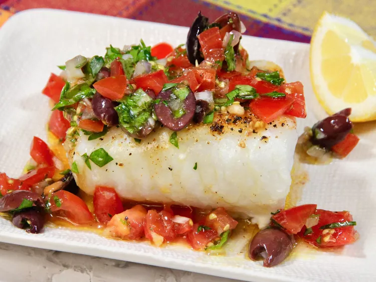

Sauce vierge

This sauce is French inspired and traditionally served over delicate white fish or seafood, but it's equally good over pork tenderloin, chicken, and even steamed veggies. Its taste is fresh, light, and pure, and it's so very simple to make.
Ingredients :
- 5 small tomatoes (such as Campari(R))
- 2 tablespoons minced shallots
- 2 cloves garlic, crushed
- 2 tablespoons chopped fresh parsley
Steps :
- Dice tomatoes, and place in a colander for about 5 minutes to drain.
- Transfer drained tomatoes to a bowl, and gently fold in shallots, garlic, parsley, tarragon, Kalamata olives, and basil.
- Pour olive oil and lemon juice over the vegetables, and stir until combined. Allow mixture to sit for about 30 minutes for the flavors to meld.